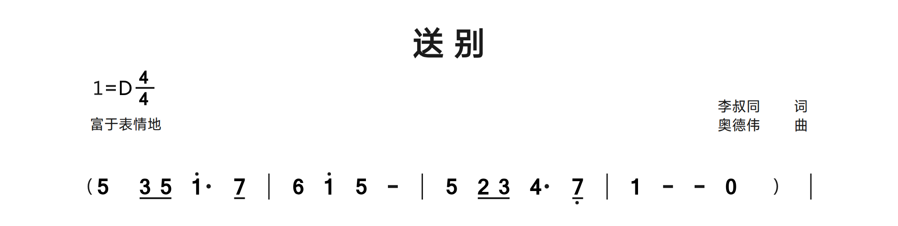
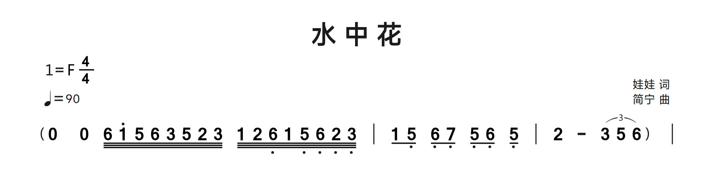
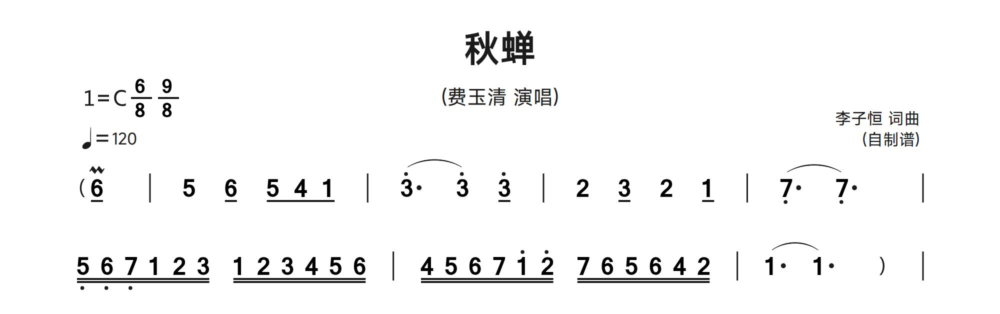
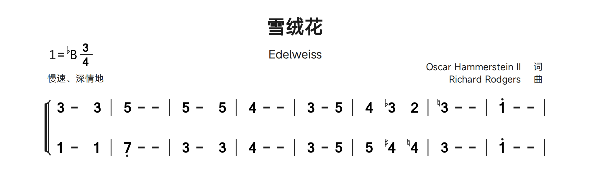
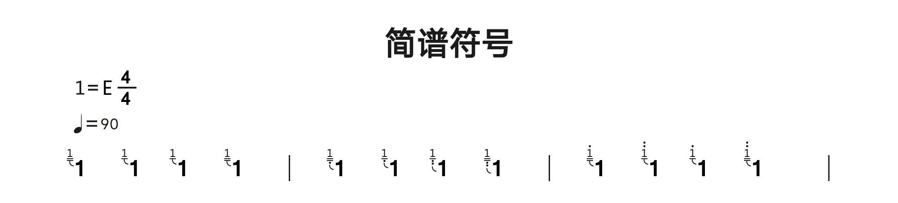
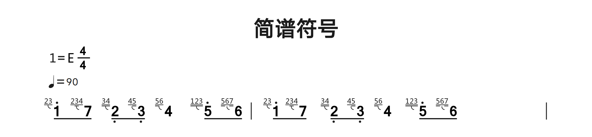
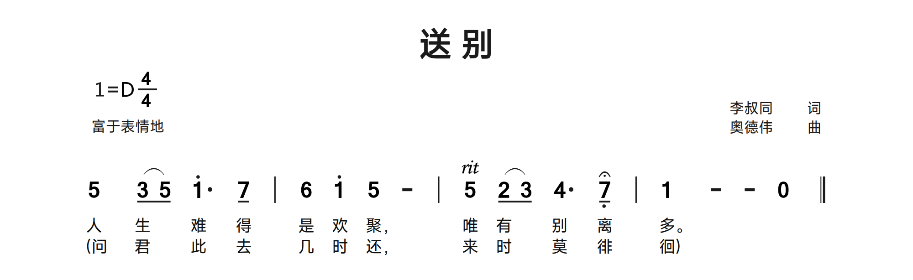
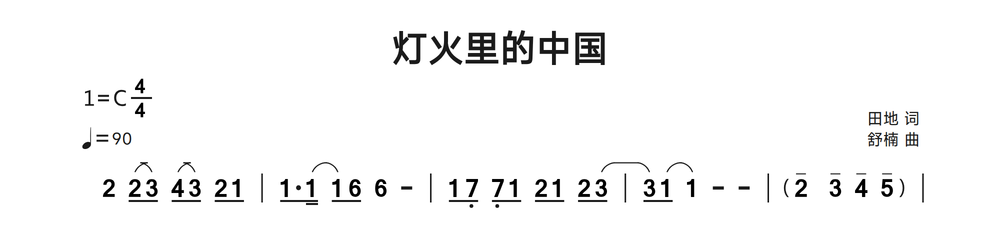

15. 音符、音区与时值
| 语法 | 含义 |
|---|---|
| 1-7 | Scale degrees / 简谱音级 |
| 0 | Rest / 休止符 |
| 8 | Invisible rest with layout space / 占位隐藏休止符 |
| 9 | Rhythm X note / 节奏 X 音符 |
| 1' / 1'' | One/two octaves above / 高一/两个八度 |
| 1, / 1,, | One/two octaves below / 低一/两个八度 |
| 1 - - | Quarter note plus two extension beats / 音符加两拍增时线 |
| 1/ / 1// / 1/// | Eighth / sixteenth / thirty-second / 八分、十六分、三十二分 |
| 1. / 1.. | Single/double dot / 单附点、双附点 |
兼容记谱中，单个数字以四分音符为基本单位。每个紧附斜线将时值减半。附点增加原时值的一半，双附点增加一半再加四分之一（合计原时值的 1.75 倍）。增时线（-）表示音符的延续；歌词无需为每条增时线单独跳过。八度逗号/单引号写在数字后，不要在音符与后缀间加空格。
Q: 1 2' 3,, 0 | 1/ 2/ 3// 4// 5/ 6 7 | 6. 7/ 1' - ||音级、休止、隐藏休止与节奏 X
1-7 表示相对于 D 的音级，不是绝对 MIDI 音高。0 是可见休止符；8 是隐藏休止或空白事件，常用于声部占位，并非第八音级；9 画节奏 X，并非音高 9。增时线 - 延续发声，不是另一个需要唱词的起音。隐藏 8 仍是源码事件；歌词错位时，应对照它的位置及 @，不要直接删掉所有不可见占位。
先核对时值，再调整排版
基本数字按四分音符计算：无 / 为 1，/ 为 1/2，// 为 1/4，/// 为 1/8。单附点乘 1.5，双附点乘 1.75。因此 5/. 为四分音符的 3/4，5//. 为 3/8，5.. 为 1.75。常规简谱中的独立增时线增加延续拍。4/4 的普通完整小节可放四个四分音符；6/8 可放六个八分音符。连接减时线、合并歌词或增加空格都不能修正错误的总时值。
把后缀连在主音后
高音用撇号，低音用逗号；重复表示多个八度。7,/# 同时带低音、八分音符减时线与升号。示例中有多种兼容后缀顺序，宜以可用片段为基础修改，不要把复合音符拆成不相连的文字。Q 中的点是附点，C 中的标点属于歌词。不要将半角撇号改为排版引号。
时值、音区与隐藏休止符
3/ 与 5/ 为八分音符，1'. 为高音附点音符，7,/ 为低音八分音符。末尾的 0 可见，8 占位却不显示休止数字。&zkh / &ykh 标明伴奏括弧。
示例库：Farewell.jps · 源码行 10-10。 摘录采用 Linux 版本的应用字体集渲染，省略页面空白。 下载此 JPS 摘录
JPS 源码
Q: 5&zkh 3/ 5/ 1'. 7/ | 6 1' 5 - | 5 2/ 3/ 4. 7,/ | 1 - - 0 8&ykh |
三十二分音符与增时线
三个 / 产生三条减时线。比较开头的 0、低音逗号和高音撇号、短音符串，以及末尾的 2 -。末尾 (y...) 是连音，后文详解。
示例库：Flower-In-Water.jps · 源码行 10-10。 摘录采用 Linux 版本的应用字体集渲染，省略页面空白。 下载此 JPS 摘录
JPS 源码
Q: 0&zkh 0 6/// 1'/// 5/// 6/// 3/// 5/// 2/// 3/// 1/// 2/// 6,/// 1/// 5,/// 6,/// 2,/// 3,/// | 1/ 5,/ 6,/ 7,/ 5,/ 6,/ 5,/ | 2 - (y3 5 6&ykh) |
16. 自动与自定义节拍分组
章鱼简谱在以八分音符为单位的复拍子中，按附点四分音符拍自动连接短音符的减时线：6/8 分成两个三音组，9/8 分成三个，12/8 分成四个，每组相当于三个八分音符。分母为 8、分子大于 3 且能被 3 整除的拍号均适用此规则。其他拍号，包括 3/8 和 2/2，保留四分音符单位的自动分组。音符本身的时值不变。
P: 6/8
Q: 1/ 2/ 3/ 4/ 5/ 6/ |~ 与 ^ 的作用位置
上例无需额外标记便可分成两个三音组。只有需要覆盖自动分组时，才使用 ~ 和 ^：~ 将所在音符与后音连为一组，^ 在所在音符后结束该组。例如，1/~2/^3/~4/^5/~6/ 将六个八分音符明确分成三个双音组。这些标记改变减时线的视觉连接，不改变音高或时值。十六分音符串还需检查两层减时线。在歌词中，~ 用于合并一个唱词位置。曲中的 ~、^ 都不会增加音符。
复合拍中的连接与拆分
描述头列出 6/8 与 9/8，第一个拍号决定初始的附点四分音符分组。显式标记可自定义分组：第一行的 6/^ 在该音后结束分组，5/~ 4/~ 1/ 连成一组；第二行以 ~ 连接较长音群。这些符号改变分组，不改变时值。
示例库：Autumn-Cicada - Fei-Yuqing.jps · 源码行 11-12。 摘录采用 Linux 版本的应用字体集渲染，省略页面空白。 下载此 JPS 摘录
JPS 源码
Q: 6/&sby&zkh | 5 6/^ 5/~ 4/~ 1/ | (3'. 3') 3'/ | 2 3/ 2 1/ | (7,. 7,.) |
Q: 5,//~ 6,//~ 7,//~ 1//~ 2//~ 3// 1//~ 2//~ 3//~ 4//~ 5//~ 6// | 4//~ 5//~ 6//~ 7//~ 1'//~ 2'// 7//~ 6//~ 5//~ 6//~ 4//~ 2// | (1. 1.) 8&ykh |
17. 变音与倚音
升音 #、降音 $、还原 = 写在所属数字后，例如 4#、7$、3=。倚音使用音符后紧附的方括号：1[23] 表示前倚音，1[h23] 表示后倚音。组内仍支持逗号/单引号、斜线及变音。倚音默认八分，加一条斜线成为十六分。紧附音符的方括号与小节线处的跳房子括号不同。
Q: 4# 7$ 3= 1[2/3'] | 5[h6,7/] - ||变音记号的位置与核对
变音记号写在所属数字后，如 4#、7$、3=，印刷位置却在数字前。D 改变描述头调号；音符变音记号针对具体书写音符。把片段复制到另一调号环境后，应检查后续重复音及还原号。章鱼简谱按输入记谱，不能替用户判断和声拼写或补齐所有缺失还原。
倚音是依附主音的小音符组
1[23] 为依附主音 1 的前倚音组，1[h23] 为后倚音组。h 放在 [ 后，不放在 ] 后。组内可写多个音、音区、变音及减时线；裸数字已按八分倚音显示，/ 变为十六分。主音仍保留自身时值与歌词，不应为每个倚音数字另分配主旋律唱词；也不要将方括号移到小节线，那会变成结尾线语法。
降号、升号与还原号
Q2 中的 3$ 后有 3=，Q4 中的 4# 后有 4=。符号在源码中写于数字后，谱面却画在数字前。隐藏 8 用于对齐合唱声部。此摘录仅渲染所选两个声部。
示例库：Edelweiss - Choir ChinEng.jps · 源码行 23-23, 27-27。 摘录采用 Linux 版本的应用字体集渲染，省略页面空白。 下载此 JPS 摘录
JPS 源码
Q2: 3 - 8 3 | 5 - - | 5 - 8 5 | 4 - - | 3 - 5 | 4 8 3$ 8 2 | 3= - - | 1' - - |
Q4: 1 - 8 1 | 7, - - | 3 - 8 3 | 4 - - | 3 - 5 | 5 8 4# 8 4= | 3 - - | 1' - - |
前后倚音与音区
前四个主音比较前倚音、后倚音及短时值；后面的小节比较倚音的低音与高音。[h...] 在谱面位于主音之后，[...] 位于之前，但源码均写在主音数字后。
示例库：Symbols.jps · 源码行 8-8。 摘录采用 Linux 版本的应用字体集渲染，省略页面空白。 下载此 JPS 摘录
JPS 源码
Q: 1[1/] 1[1] 1[h1] 1[h1/] | 1[1,/] 1[1,] 1[h1,,] 1[h1,,/] | 1[1'/] 1[1''] 1[h1'] 1[h1''/] |
包含多个音的倚音组
左小节为前倚音组，右小节以 h 表示相应后倚音组。组内的 / 单独缩短倚音，不改变主音时值。
示例库：Symbols.jps · 源码行 15-15。 摘录采用 Linux 版本的应用字体集渲染，省略页面空白。 下载此 JPS 摘录
JPS 源码
Q: 1'/[23] 7/[23/4] 2,/[3/4/] 3,/[45/] 4[5/6] 5'/[1/2/3/] 6/[5/67/] | 1'/[h23] 7/[h23/4] 2,/[h3/4/] 3,/[h45/] 4[h5/6] 5'/[h1/2/3/] 6/[h5/67/] |
18. 力度与渐强渐弱
在音符后附加 & 编码，例如 3&mp。参考术语包括 ppp、pp、p、mp、mf、f、ff、fff、cresc、dim、sf、fp、sfp、a tempo 和 rit；双词术语写作 &a tempo。渐强以 < 开始，渐弱以 > 开始，以 ! 结束；开头记号后加 + 可上移以避免重叠。这些是印刷演奏提示，桌面程序不会将其转换为音频播放控制。
Q: 1&p< 2 3 4! | 5>+ 4 3 2! | 1&a tempo - - - ||| 编码 | 演奏提示 |
|---|---|
&ppp | 极弱 |
&pp | 很弱 |
&p | 弱 |
&mp | 稍弱 |
&mf | 稍强 |
&f | 强 |
&ff | 很强 |
&fff | 最强 |
&cresc | 渐强 |
&dim | 渐弱 |
&sf | 突强 |
&fp | 强后立即弱 |
&sfp | 突强后立即弱 |
&a tempo | 回到原速度 |
&rit | 渐慢 |
渐强弱的起点、终点与高度
在起点主音上写 < 或 >，在终点写 !。单独开启的线没有可靠终点，应在分页前明确闭合。<+、>++ 比默认位置更高，+ 越多请求的抬高越大。先使用能避开连音线或结尾线的最小偏移，再检查相邻系统及导出。页面间距移动整行，+ 移动指定记号，两者是不同调整。
力度术语是谱面指示
&ppp 和 &fff 与 &pp、&ff 一样使用随程序提供的矢量字形。它们采用相同的音符附着及高音、连音线避让规则，不改变音符时值或间距。例如：Q: 1&ppp - - - | 1&fff - - - |。
把 &mp、&mf、&f 等表中术语写在指示开始的音后，保留多词 &a tempo 的完整写法。ppp 至 fff 表示强弱，cresc/dim 表示渐变，rit、a tempo 表示速度。&yc 延长记号不是力度，但同样使用 & 机制。这些印刷术语不会提供播放或 MIDI 输出。
合唱中的力度与抬高渐强线
Q1 与 Q3 以 &mp 开始。<+ 开启抬高的渐强线，! 结束；随后 > 开启渐弱线。对照其端点及其他声部的音符、休止符，并检查同一系统中的歌词。
示例库：Edelweiss - Choir ChinEng.jps · 源码行 11-18。 摘录采用 Linux 版本的应用字体集渲染，省略页面空白。 下载此 JPS 摘录
JPS 源码
Q1: 3&mp -<+ 5 | 2' - -! | 1'> - 5 | 4 - -! | 3 - 3 | 3 8 4 8 5 | {dsb 6 - - | 5 - - | } 4 - - | 4 - - |
C1: 雪绒花，雪绒花，清晨迎@着@我开放，
C2: E-/ del-/ weiss~, E-/ del-/ weiss~, ev-/ '~r~y morn-/ @ing/ @you/ greet/ me~.
Q2: 3 - 3 | 5 - - | 5 - 5 | 4 - - | 3 - 3 | 3 8 1 8 1 | 1 - - | 2 - - |
Q3: 5&mp -<+ 5 | 5 - -! | 1'> - 1' | 6 - -! | 1' - 1' | 1' 8 6 8 6 | 6 - - | 7 - - |
C3: 雪绒花，雪绒花，清晨迎@着@我开放，
C4: E-/ del-/ weiss~, E-/ del-/ weiss~, ev-/ '~r~y morn-/ @ing/ @you/ greet/ me~.
Q4: 1 - 1 | 7, - - | 3 - 3 | 4 - - | 5 - 5 | 5 8 4 8 3 | 2 - - | 5 - - |
19. 装饰、括弧与注释
| 音符后编码 | 含义 |
|---|---|
| &yc | Fermata / 延长记号 |
| &bc | Tenuto / 保持音 |
| &zy | Accent / 重音 |
| &dy | Staccato / 顿音 |
| &hx | Breath / 换气 |
| ­ / &xhy | Upward / downward slide / 上、下滑音 |
| &sby / &xby | Upper / lower mordent / 上、下波音 |
| &cy | Trill / 颤音 |
| &sby+ / &xby+ / &cy+ | Variant ornament forms / 装饰变体 |
| &zkh / &ykh | Left / right accompaniment parenthesis / 伴奏左右括弧 |
这些短编码来自记谱参考，多以中文名称拼音首字母构成，应附到正确音符。波音/颤音的 + 后缀选用图例中的另一形态。音符后加双引号注释可在上方显示文字。伴奏括弧 &zkh、&ykh 同样写在所属数字后，即使绘制的左括弧位于音乐前方。
Q: 3&yc 3&bc 3&zy 3&dy | 3&hx 3­ 3&xhy 3&cy |
Q: 1&zkh 2 3 4&ykh | 5"轻柔地" - - - ||选择正确主音与变体
&yc 为延长，&bc 为保持音，&zy 为重音，&dy 为顿音，&hx 为换气。­/&xhy 为上、下滑音，&sby/&xby 为上、下波音，&cy 为颤音。表中的 + 形式选择装饰记号变体，此处 + 不等同于渐强线高度偏移。可兼容的多种代码能附在一个主音上，如 6/&sby&zkh；需检查是否拥挤。
三种文字与括号用途
音后引号注释如 5"轻柔地唱" 印在该音附近；小节线引号注释属于边界；整行 # 注释不印刷。伴奏括弧应在首、末音后写 &zkh、&ykh。Q 中 (...) 是音乐连线，不是一对伴奏字形。C 中的普通标点及旧式 (~...~) 属于歌词，不是音乐跨度语法。
渐慢与延长记号
5&rit 印出渐慢术语；7,/&yc 在低音八分音符上画延长记号。章鱼简谱当前没有播放功能，这些记号仅用于谱面。
示例库：Farewell.jps · 源码行 34-36。 摘录采用 Linux 版本的应用字体集渲染，省略页面空白。 下载此 JPS 摘录
JPS 源码
Q: 5 (3/ 5/) 1'. 7/ | 6 1' 5 - | 5&rit (2/ 3/) 4. 7,/&yc | 1 - - 0 ||
C: 人生@难得是欢聚，唯有@别离多。
C: (~问君@此去几时还，来时@莫徘徊~)
保持音与伴奏括弧
末小节每个音后均有 &bc。&zkh 写在首音后，&ykh 写在末音后，形成可见伴奏括弧而不增加音乐事件。
示例库：China-In-The-Lights.jps · 源码行 21-21。 摘录采用 Linux 版本的应用字体集渲染，省略页面空白。 下载此 JPS 摘录
JPS 源码
Q: 8 2 (2/ 3/) (4/ 3/) 2/ 1/ | 1/. (1// 1/) 6/ 6 - | 1/ 7,/ 7,/ 1/ 2/ 1/ 2/ (3/ | 3/) (1/ 1) - - | 2&bc&zkh 3&bc 4&bc 5&bc&ykh |